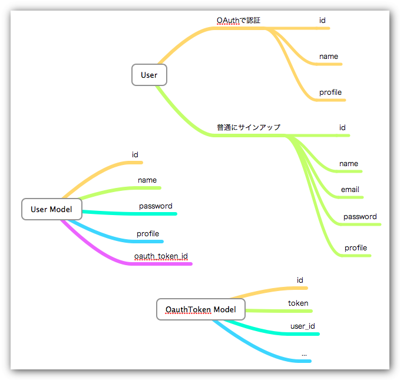

oauth-pluginではまった
OAuthを導入しようとした。Twitterのだけなら何とか拾ってきたコードで動くとこまで持ってけてたけど、どうせやるならいろんなOAuth Providerに対応したい。oauth-pluginってgemを使えば簡単に沢山のOAuth Providerに対応できるみたいなので導入しようとしたけど、これがくせ者だった。
まずoauthとoauth-pluginをただ入れるだけじゃ動かない。 acts_as_authenticated, restful_authentication or restful_openid_authentication
というプラグインが入ってて、ユーザー認証をこれらのgemに任せてないとダメ。
作者がrestful_authenticationをすすめてたのでこれを導入した。（usersテーブルの構造自体が変わるので、ただ単にインストールするだけじゃなくて rake db:drop して古い db/migrate/(日付)_create_users.rb を削除し、もう一回 rake db:migrate しないといけない。さらにControllerとかViewとかもいじらなきゃいけないので地味に結構面倒くさい。
しかし何度やってもうまくいかない。「 login_required みたいなメソッドねーし」とかエラーが出る。どうやら昔の restful_authentication にはそういうメソッドがあったらしんだけど、現在の restful_authentication からは削除されてるらしい。他にも current_user っていうのも未定義で、この辺のエラーのおかげで完全に萎えた。
そういうわけで一週間くらいOAuth対応に向けて頑張ってたけど諦めました。TwitterだけOAuth認証に挑戦してみる。とってきたOAuth Tokenの扱いとかに若干不安があるけどうまくいくかしら。
Gitのhookを使ってDreamhost上のJekyllに記事を公開
やってみた。以下を参考にした。
Deploying a jekyll generated site
これもうむかし.macとかについてたiBlogとかわらんわ。GUIのクライアントはないけど、VimとかCodaとか好きなエディタ（TextMateで日本語がネイティブに扱えたらなー）で記事書いて、gitで git push するだけ。
で、やり方なんですけどちょっとgitに慣れてない人には複雑かもしれない。三つgitのリポジトリを用意する必要がある。
まず記事を作成するパソコンでgitとjekyllのセットアップをしたあと、リポジトリを作る（リポジトリ1）。その後Dreamhostの公開ディレクトリでないところに空のリポジトリを作る（ git --bare init ）。ここでは blog.git という名前にしましょう（リポジトリ2）。そんでそこにリポジトリ1をpushする。その後リポジトリ2の /blog.git/hooks/ に post-update というファイルを作り、以下のように書く。ファイルに実行可能なアクセス権を与えることを忘れずに。
#! /bin/sh
unset GIT_DIR && cd $HOME/tech.portalshit.net/ && git pullそんでもって git clone blog.git <公開用のディレクトリ名> する（リポジトリ3）。リポジトリ1から公開用ディレクトリにリポジトリがコピーされるので、この中に含まれる _site というディレクトリを panel.dreamhost.com で公開ディレクトリとして設定すると、git push する度にhookが発動されて、めでたく記事が公開されるという次第です。
まとめ
まとめると、
1. 記事を作成するローカルリポジトリ
- ローカルリポジトリをpushするリモートリポジトリ
- リモートリポジトリをcloneする公開用リポジトリ
の三つが必要なことを忘れないようにしてくだしあ。
これであなたもハイド博士だ！
OAuthがwakaranai
RailsでOAuthを使ってTwitterとかで認証させたい。oauth-pluginを使おうとしてるけど全然うまくいかない。イメージとしてはこんな感じ。

疑問点がいくつかある。
-
Userモデルで
validate_presence_ofをパスワードフィールドにかけてるけど、OAuth経由でユーザーが追加されたときはどうすればいいんだろう。OAuth経由ではパスワードは預からないので、validate_presence_ofでエラーが出るはず。 -
Userモデルで
has_many :oauth_tokensとかリレーションの設定をしてしまったとして、OAuth経由ではなく普通にサインアップしたユーザーの扱いはどうなるんだろう？ 「oauth_tokensにそんなuser_idの人いないし」みたいなエラーが出るような気がする。
他にもいろいろ気になる点があったような気がするけど分からなくなってしまった。
Vimで編集を終了した後、元のコンソールの状態を復元したい
FreeBSDでVimを起動しファイルを編集したあと、 :q でVimを終了させてるのに元のコンソールに戻らなくてなんか嫌だなーと思っていた。MacもUbuntuもDreamHostのDebianもVimを閉じると元に戻るのに、職場の本番環境のFreeBSDだけこれなの。ファイル編集前のコンソールの履歴とかを見たいこともあるので、Vimが終了したら元の画面に戻るようにしたいと随分長いこと思っていたんだけど、たったいまようやく出来たのでメモっときます。
ちなみにVimには restorescreen とかいうオプションがあるらしく、必死で.vimrcにこの設定を書いてたけど、これはなんかWindowsのVim専用のオプションらしいのでマカーやUNIXユーザーの方はこれを設定しても無駄です。
情報元は フルスクリーンアプリを終了したときに元のコンソールの状態に復元する - 技術メモ帳 というページ。
FreeBSDの場合、 /etc/termcap ってのの中にフルスクリーンアプリを終了したときにコンソールに戻るかどうかを設定する場所があって、こいつを変更すればよいらしい。
しかし自分はこのサーバーでroot権限を持ってない。なので cp /etc/termcap ~/.termcap したあと chmod 644 ~/.termcap して vim ~/.termcap し、自分の使ってるターミナルの環境に合わせて設定を変更してやるとOK。
僕の場合はMacの純正ターミナルを、シェルはzshで使っている。 echo $TERM してみると xterm-color と表示されるのでxterm-colorの設定が書いてあるところをいじった。
くわしくは上のリンク先を見てもらうといいんだけど、とにかく te ってのと ti ってのがあって、これをMacの場合は te=\E7\E[?47h 、 ti=\E[2J\E[?47l\E としてあげればいい。そんでシェルの設定ファイルに export $TERMPATH=$HOME/.termcap と書いてやり、一端ログアウトして再ログインするとめでたくVimを終了したときにコンソールが復元されるようになります。
CakePHP 1.2から1.3への移行の個人的メモ
CakePHPで動かしているサイトをCakePHP 1.2ベースからCakePHP 1.3ベースに変更作業中。その課程で気がついたことをメモしておきます。
$html->link()などHTMLヘルパーでエスケープをfalseにしたいときは$options['escape']を使う。$cakeDebugは廃止されたのでエラーが出る。$sessions->flash()はecho $sessions->flash()とする必要がある。また AppController でヘルパーとして呼び出さなければならない。- debug_kit は github から最新版を
git cloneする。
参照:
YAMLで初期データをRailsアプリケーションのDBにぶっ込む
初期データをマイグレーションでRailsアプリケーションにぶっ込んでみた。後からいちいち手入力するのめんどいし、マイグレーションでデータをロードしとけば、本番環境でうごかすときも rake db:migrate で初期データは入るはずだから楽ちんかなと思って。
結果的には無事データをロード出来たんだけど、YAMLの書式が分かってなくて、結局丸一日時間を費やしてしまった。大したデータ量じゃなかったから下手するとちまちま手入力するのと変わらないくらい時間かかったかも。
hoge: #アイテムの名前
id: 1
name: "hoge"
address: "ホゲ県ホゲ村ホゲホゲ"
fuga:
id: 2
name: "fuga"
address: "ホゲ県ホゲ村フガフガ"とかやんなきゃいけなかったんだけど、YAMLの書き方が分かってなくて、
hoge:
id: 1
name: "hoge"
address: "ホゲ県ホゲ村ホゲホゲ"
id: 2
name: "fuga"
address: "ホゲ県ホゲ村フガフガ"とか書いてた。どっちも hoge県 に分類されるんでこんなんでいいだろ、みたいなノリ。しかしこれはやっぱり文書の構造がおかしい。これをロードしてみると、 id=2 のものしかロードされなかった。
結局、拾ってきた コードを参考にして
require 'yaml'
require 'pp'
data = YAML.load_file('hoge.yml')
pp dataみたいなやつを書いて、読み込まれる配列の構造を確認しながらYAMLを書いたところうまくいった。
Active Recordが難しすぎてしょんべんちびりそう
『RailsによるアジャイルWebアプリケーション開発 第三版』をまだちまちま読んでる。いまActiveRecordのリレーションシップのところ。全然分からなくて全然進まない。もうRails 3.0が出そうだというのに。またろくすっぽ技術書を読まないうちに化石になっちゃいそうだよ。バカはつらいよ。
インスタンス変数
一個前の記事（Rubyがエレガントだって言われるのがわかってきたような気がする | tech.portalshit.net - CakePHP, Rails, JavaScript）をcxxさんに添削してもらったところ、Rubyの方のコードには問題があったらしい。Rubyでは変数を宣言だけして終わりみたいな初期化をしちゃダメだそうで、必ず何かを代入しないといけないらしい。
そういうわけで正しくは、
class Hoge
def initialize
@a = ""
end
def hoge
@a = "hogehoge"
end
end
fuga = Hoge.new
puts fuga.hogeと書くそうです。
ところでなんで自分は前回、 @a というインスタンス変数を使ったのかがよく分からない。Railsでコードを書いていて、Controllerで定義した変数をViewで使うときにインスタンス変数を使うので、そういう風に思い込んでいるのかな。↑のコードでは別にインスタンス変数を使う必要はなくて、
class Hoge
def initialize
a = ""
end
def hoge
a = "hogehoge"
end
end
fuga = Hoge.new
puts fuga.hogeでも同じ結果を出力しますね。
インスタンス変数と普通の変数の違いが分かってなかったので、たのしいRuby（第2版）を開いて復習してみたところ、以下のような記述があった。（たのしいRuby 第2版 pp.123-124）
@で始まる変数は インスタンス変数 といいます。ローカル変数とは違って、このメソッドを抜けてもその値は保存されますが、インスタンスごとに違う値を割り当てられる変数です。（たのしいRuby 第2版 pp.123-124）
なるほど！ 例えば上のコードを引数つきのものに改造したとしましょう。
class Hoge
def initialize(b="")
@a = b
end
def hoge
print @a, "\n"
end
end
fuga = Hoge.new("Fuga")
piyo = Hoge.new("Piyo")
fuga.hoge
piyo.hogeで、これを実行すると
Fuga
Piyoと表示される。こんな感じで、一つのクラスから複数のインスタンスを生成するときに使うのがインスタンス変数って理解でオーケーなのかなと思います。
Rubyがエレガントだって言われるのがわかってきたような気がする
「PHPは汚い、Rubyはきれい」とかそういう言説の意味が昔は分からなかったんだけど、昨日今日、久々にCakePHPで作ったサイトのメンテナンスをしてて「PHP、確かにきちゃないわ」と思った。
オブジェクト指向っぽい何がしかのコードをPHPで書いてみる。
<?php
class Hoge {
var $a;
function hoge() {
return $this->a = "hogehoge";
}
}
$fuga = new Hoge();
echo $fuga->hoge();
?>つぎにRubyで同じコードを書いてみる。
class Hoge
@a
def hoge
@a = "hogehoge"
end
end
fuga = Hoge.new
puts fuga.hogeまずPHPは中括弧たくさん書かないといけない。これが面倒くさい。中括弧はキーボードでは shift + [ とか shift + ] とかだから、 shift の分だけキーボードをたたく回数が増える。実にめんどい。最初はRubyのインデントでブロックを表現するところに慣れなかったけど、慣れたらちまちま中括弧をかかないとダメなPHPにいらいらするようになった。中括弧の閉じ忘れでエラーが出ることとかも多いし。
さらにメソッドとか変数へのアクセスもめんどい。Rubyだと . でアクセスできるのに、PHPだと -> だ。入力するときはキーボードに - と shift + . と打たなきゃいけない。アホか。Rubyだとキーを一個打つので済むのが、PHPだと三個だ。
他にも予約語が長いとか、変数のスコープがおかしいんじゃねとか、Rubyを触る前は分からなかったPHPの変態的なところが目につくようになってきた。
PHPちゃん、僕もう疲れたよ（特にCakePHPの配列地獄）。
RailsアプリケーションでMarkdownを使う
RailsアプリケーションでMarkdownを使いたと思った。（Markdown大好きっ子なので）
調べてみたところ、 BlueCloth というライブラリを使うといいらしい。
これはRailsのプラグインではないのでgemでインストール。
sudo gem install blueclothその後viewで
<%= markdwon(@item.text) %>とか書けばいい。
しかしなんも設定しない状態だとRailsアプリケーションはBlueClothを読み込まないので、config/environment.rbに
config.gem "bluecloth"と書いてやる。するとめでたくMarkdownが使えるようになる。
XREAにRubyGemsをインストール
XREAでRailsを使おうと思っていろいろ調べてみた。Railsは rake rails:freeze:gems してアップロードすればオッケーらしいんだけど、RubyGemsはインストールしないといけないみたい。ところがネットに乗ってる情報を参考にインストールしてみたけど全然うまくいかなかった。指示通りにやってるんだけどパスが通らないのか、インストールしても ‘rubygemsをrequireできねーぞゴラ！’ みたいなエラーが出る。
.profile で記述した GEM_HOME や RUBY_LIB のパスは間違ってないと思うんだけど、何回やっても $HOME/lib/ 直下にRubyGems系のファイルが展開されてしまう。これがエラーの原因っぽい。しょうがないので力業で guantlet_rubygems.rb, rbconfig/ rubygems/ rubygems.rb, ubygems.rb を $HOME/lib/ruby/site_ruby/1.8 に移動させた。その後 source ~/.profile して適当な場所で gem -v してみたところ、ちゃんと 1.3.5 と表示された。
蛇足だけど最初、RubyGems 1.3.7をインストールしようとしたら、利用予定地のサーバーのRubyのバージョンが1.8.5なためにインストールできなかった。そういうわけでRubyGemsは1.3.5を入れた。
あとRubyGemsが入ったからといってシェルで gem install rails とかやってもプロセスを kill されるっぽいのでよい子のみなさんは必要な gem は自分のパソコンでインストールしてからアップロードした方がよさげです。
CakePHPはSchemaとかがしょぼいしうんざりする
CakePHPで作ってたプロジェクトのDBのフィールド名にスペルミスを発見したので（ longitude を longtitude としていた）、それを修正するためにDBの構造をいじった。このとき、Cakeは普通にやってたらSchemaとかの概念に触れる機会がないことに気がついて急に怖くなった（ここんとこRailsばっかり触っていたので）。いや、CakePHPにもSchemaの概念はあるんだけど、普通にサイト作るだけだったら世話になる機会がない。というか俺がCakeの底本にしてた公式ガイドにSchemaの項目がない！
これじゃあgitとかでバージョン管理しててもDBの論理構造が置いてけぼりになって、分散管理とかできないじゃん。SQLite使ってたらバイナリファイルをgitでtrackすればまぁ分散開発でけそうだけど、MySQLとかだったら死ぬよね。
確かにCakePHPでサイト作るのは楽だったし早かった。ほぼ何もできない状態の自分が数ヶ月でCMS作れたのはCakePHPのおかげなんだけど、CakePHPは何でもテケトーな感じがする。対してRailsは厳格だ。楽するためのフレームワークというより、よりStrictにサイトを構築するためのフレームワークという感じがする。だから慣れるまでは時間がかかる面があるのは否めないんだけど、SchemaにしろTestにしろ、Railsやってて勉強になることはたくさんあります。はやく皆と同じようにrailsの手術を受けたい。
Jekyllに変えた
このブログのCMSをMephistoからjekyllに変えてみた。
Mephistoは公式サイトつながらないし、Mephisto使ってた外国のGeek連中がここ一年くらいでこぞってJekyllに移行してるみたいなのでこのビッグウェーブに乗ってみた。
Jekyll = 静的CMS
しばらくJekyllの使い方が分からなくて格闘してたけど、やっと使い方が分かった。これは静的なCMSであって動的なCMSではない。Movable Typeに似てる。それをGeekなスタイルでやる感じ。
Rubyが入ってるサーバーはいらない
コメント機能とかはないのでサーバーでRubyが動く必要はナッシング。DBも使わないのでMySQLの設定とかSQL分との格闘も必要ナッシング。コメント欄が欲しい場合はDISQUSとかに外注すればOK。
ちょっと話題がずれるけど、DISQUSって便利そうですよね。他人のブログにコメント書いたあとってそのコントロール権みたいのはブログの持ち主に移行するけど、DISQUSみたいなサービスを利用すればコメントを書いた本人が過去の自分のコメントをトラックしやすくなる。ブログ主にしたってスパム対策とかもやりやすくなる。自前で自分のブログにコメント欄を持つって時代は終わったのかもね。いまはTwitterとかもあるし。
Mephistoからの移行について
Jekyllのgithubのwikiに移行方法が載っけてあるけど（Blog Migrations - jekyll - GitHub）、これわかりにくい。というかMephistoをMySQLで運用してないとスクリプトをそのまんまでは利用できない。結果から書くと僕はMephistoはSQLite3で運用してたので移行スクリプトを使えなかった。
一応MephistoのDBをSQLite3からMySQLに変更してコンバートすることも試してみたけど、DreamHost上では gem install mysqlplus が sudo 権限がないために実行できず（なぜかユーザーディレクトリへのインストールもはねられる）、ローカルのMacBook上ではActiveRecordとかその辺でエラーが出て（MephistoはRails 2.2.2以下じゃないと動かないみたい）、Railsのバージョンを下げるとかも試してみたんだけどエラーが出続けるので諦めてしまった。
そういうわけでして、記事数が16本と少なかったこともあり、ちまちま手書きでMephistoからJekyllに移行しました。
コメント欄の設置（DISQUSを利用）とかフィードの生成とかカテゴリーの表示とかができてないけど、暇を見つけていじっていく予定です。
全般的なJekyllの使用感
DBいらずだしシンプルでいいっすわ。XML-RPCとかAPIを使ってどうのこうのとかいった機能はないけど、テキストファイルをしこしこ書いて、 .markdown か .textile みたいな拡張子で保存して、 jekyll コマンドを実行するだけでhtmlファイルが _site ディレクトリに生成されて、これをアップロードするだけ。この手順を自動化するシェルスクリプト（tasks/deploy at master from henrik’s henrik.nyh.se - GitHub）も公開されているので、これを使えばectoとか使うのと変わらん感じでお手軽にブログ記事を投稿できます。
Terminalからコマンドライン打つの好きな人とか、軽くてシンプルなブログを求めてる人にはうってつけだと思いますね。
Rubyいいわー
irbが素晴らしい！ 惚れた！！ PHPとかクソ！！！
RailsのMVC間の命名規約
ポータルシットに前も書いたけど、CakePHPの命名規約ではDBにusersというテーブルがあれば、モデルクラスにUser、コントローラークラスにUsersController、viewsディレクトリにusersっていうのが存在するのを前提とする。これに慣れてしまっているので、Railsのやり方にはなんか慣れない。ModelでPeople、コントローラーでUsersControllerとしてても問題ナッシングなわけだ。むしろRailsではこういうのが普通？ Rails使っててCakeをちょこっと触った人のブログにこういう感想があった。
コントロールとモデルが密すぎる。
CakePHPは、コントロール名とモデル名が密接すぎる関連を持っています。PostsControllerというコントロールを作ったら、必ずPostというモデルが存在しないと「モデルが見つからないエラー」になる。
Blog-side CakePHP わかりずらい３点
ふむふむ〜、ナルホディウスですぞ〜！！！
確かにCakePHPはモデルとコントローラーがガチガチになってて、あるコントローラーが他のモデルクラスにアクセスするときはいちいち
$use = array("Hoge");とかしなきゃいけなかった。
最初の頃はモデル、コントローラー、ビューですべてが一対一に対応してるのですんなりMVCの流れを理解できたんだけど、今にしても思えばこういう考え方はすべてのコントローラーに対応するモデル（つまりDBテーブル）がなければならないというしがらみというか束縛を生じさせる。これでは自由な発想で開発できないし、下手をすると一つのコントローラークラスに大量にメソッドを書いてしまったりして、非常にメンテナンス性の良くないコードを量産してしまう公算がある。本当は機能ごとに細かくクラスは分けた方がいいはずだし、メソッドが一つしかないコントローラークラスがあっても良いはずだ。
そういうわけで、はやくこの辺のCake流の思い込みを排除して皆と同じようにrailsの手術を受けたいです。
Railsはコントローラーのディレクトリにサブディレクトリを作れるのか！
なんじゃそれ！ 『Railsによるアジャイル〜』の15章 P239〜P240を読んでいてクリヴィッツテンギョウ！！！ app/controllers/admin/book_controller.rb ということができるらしい！ んで、そのときのクラス宣言は
class Admin::BookController < ActionController::Base
となるらしい！ 変態だ！！ ぜったい変態だ！！！
Railsむずい
CakePHPはなんも考えなくてもテキトーにやってたらサイトできてたんだけど、Railsはそんな風にはやらしてもらえない。Railsのサイト作んの自体の効率性が悪い訳ではもちろんないんだけど、レールに乗るためにはそれなりに知っとかなきゃいけないことが多い感じ。『Railsによるアジャイル〜』はいま14章まで読んだ。14章はテストの章だったんだけど、初めてテストに触れた感じ。CakePHP 1.2の公式ガイドにもテストについての章はあったけど、後ろの方でおまけみたいな感じだったから飛ばしちゃってた。たまたま先月の頭に買ってた『WEB + DB Press 56』がRubyでのテストを紹介してて、そこを読みながら14章のコードを写経していったけど、わりと早い段階でテストの重要性が説いてあって、アジャイル本はしっかりしてるわと思った。
Mephistoから引っ越したい
なんか Mephistoの公式サイト 死んでるし、jekyll に変えようかなと思ってるんだけど、 移行ガイド の通りにやってもうまくいかない。
たのしいネットストーキング with Ruby
この前大阪で第二回アメ村ブルゾンの会をやったんですけど、そこで日夜ネットストーキングプログラミングにいそしんでおられる皆さんとお会いして、TwitterのStreaming APIの使い方を教えてもらいました。なんか自分でやろうとしてたんだけど、全然見当違いなところを見ていたみたいで、僕もStreaming APIでネットストーキングできるようになりました。pokutunaさんにもらったコードと “Twitter Streaming APIをRubyで試してみる - しばそんノート”:http://d.hatena.ne.jp/shibason/20090816/1250405491 を参考に、以下のような感じにしてみました。
#!/usr/bin/env ruby
# coding: utf-8
require 'net/http'
require 'uri'
require 'rubygems'
require 'json'
USERNAME = 'morygonzalez'
PASSWORD = '***'
uri = URI.parse('http://chirpstream.twitter.com/2b/user.json')
begin
Net::HTTP.start(uri.host, uri.port) do |http|
request = Net::HTTP::Get.new(uri.request_uri)
request.basic_auth(USERNAME, PASSWORD)
http.request(request) do |response|
raise 'Response is not chunked' unless response.chunked?
response.read_body do |chunk|
#空行は無視
status = JSON.parse(chunk) rescue next
#eventを含まないものは無視
next unless status['event']
source = status['source']
if status['target_object']
target_obj = status['target_object']
target_user = target_obj['user']
puts "#{status['event']}: #{source['screen_name']} -> #{target_user['screen_name']}: #{target_obj['text']}"
elsif status['target']
target = status['target']
puts "#{status['event']}: #{source['screen_name']} -> #{target['screen_name']}"
end
end
end
end
rescue Timeout::Error => ex
p "<-----!!!! Timeout::Error!!!!----->"
retry
end
教えてもらったコードではTweetの内容を垂れ流しにするやつだったんですけど、自分でちょこっといじってTweet以外のステータスを表示するようにしてみた。しかしなんか調子悪いっぽくて、完全にはStreamを取れてないっぽいです。
でもまぁ一歩前進したことは確か。Rubyがんばるぜ。
DreamHostでRailsアプリケーションを再起動
レンタルサーバーみたいな共有サーバーとか sudo 権限のないサーバーで動かしてるRailsアプリケーションを再起動したくなることがある。でもApacheをリスタートする権限がない。じゃあどうするかとググっていたらこういう記事にたどり着いた。
To restart your rails app do a “ps x” to get the pid of your dispatch.fcgi process(let’s say it’s 1234) then do a “kill 1234”. This will kill the running process and a new one will be automatically spawned and you should now see your changes. How do I restart rails app? - DreamHost Forum
要するに ps x でRailsアプリケーションのプロセスIDを調べ、 kill #pid しちゃうというわけ。 kill できんのかなと半信半疑だったけどちゃんとできた。
他のレンタルサーバーには当てはまらないかもしれないけどメモっときます。
CakePHP 1.2.xのRSSヘルパーはわかりにくい
ちょっとCakePHPで作ってるサイトでRSSフィードを配信したいと思ったのでやってみたんだけど、思いの外面倒くさくてびっくりした。『RailsによるアジャイルWebアプリケーション開発』を読みながらRails 2.3.5でRSSフィード作るときは結構簡単だった気がするので、正直これはないわと思った。
『Railsによる〜』で作ってるデモプロジェクトのdpeotのコードを見てみると、RSSを配信するときはControllerに以下のように記述し、
respond_to do |format|
format.html # index.html.erb
format.xml { render :xml => @products }
end
config/routes.rb に
map.connect ':controller/:action/:id.:format'
と書いたあと、RSS用のViewを用意してやるだけだ。ものすごくシンプルで簡単だった。
CakePHPで同じことをやるためには以下の手順が必要。
ちょっと面倒くさすぎてやる気にならなかった。どうせいま僕が作ってるサイトなんてRSSリーダー使うような人が見るサイトじゃないし、フィード配信機能の実装はそんなにプライオリティ高くないので他にやることがなくてどうしようもなく暇なときにでもやろう。
Railsは最初のとっかかりのハードルは高いけど、使い方を覚えていったらやっぱりCakePHPとかよりも全然簡単かつ高速に開発できる気がする。レールに乗ってる感強い。このMephistoの設置もすごく楽だった。ただTerminalを使い慣れた人や、サーバーにSSHでアクセスできる環境じゃないとRailsアプリケーションを使うのは難しい。CakePHPは反面、全部FTPでアップロードすれば良いのでサーバーに標準的な構成でPHPがインストールされてりゃ環境構築でつまずくことはない。どっちをとるかって話ですよね。
僕はファッションの観点からRailsを選びたい。
MVCのViewにどこまで書くか
『Railsによるアジャイル〜』とかのコードはViewの部分がスゲーシンプルで、ロジックがほとんど書いてない。これに慣れると、CakePHPに戻って自分が作ってるウェブアプリを見たときに、Viewに結構ロジックが書いてあって愕然とする。例えばフラグをたてて条件にマッチすれば日付を表示し、マッチしなければ表示しないとかしたいとするじゃないですか。Controllerでそういう設定できなくないけど長くなる。Viewの中に書いてしまったら数行で済むし。
だから僕の作ってるCakePHPアプリはMVCとか名ばかりでViewのコード超きたない。入れ子になったif文がたくさんあるし、正規表現で日付の書式変更とかまでやってる。さすがに関数とかは定義してないですけどね。
そもそもCake FoundationのCakeBookも結構Viewにロジックが書いてあったりする。というかかなりハードに書いてある。CakePHPってViewとロジックを分離させるのが難しいのかな。
加えて、Controllerも結構ひどいことになってる。本当はModelに書くべきことを結構Controllerに書いている気がしないではない。サイト検索のためのメソッドとか200行近くあるし、joinとかしまくり。
MVCでロジックとヴューを分離することでデザイナーがViewを触れるようになって分業が進むかもとか思ってたけど、到底そんな状況にないですね。
Gitのbranchの使い方
Gitでbranchの効率的な使い方みたいのがよくわからない。
* 実験的な機能をつけたい
- ブランチを分ける（例えば開発用に alternate というブランチを作る）
* 開発する
- 開発完了後、 master にマージ
みたいな感じかなと思ってた。
しかし実際に運用してみると、実験的な機能の実装の他に、日常的にmasterでコードの改良みたいな作業があり、alternateで開発が完了した後にmasterにマージしたら多分コンフリクト起こりまくりになるような気がしてきた。
それで日常メンテみたいな作業はmasterブランチで行い、それをalternateにマージするという手順をとってる。正しい開発方法かどうかはわからないけど、一応alternateブランチもmasterの最新の変更を追跡できる。んでalternateではしこしこ開発を続けて、開発完了時にmasterにマージしても多分派手なコンフリクトは起こらないんじゃないかと思ってますがどうなんでしょう。
IE6, 7, 8でJavaScriptがうまく動いてくれない
こういうコード書いてます。
function getAttrName(attrObj) {
var attrName = attrObj.firstChild.data;
// items = document.getElementsByClassName('item');
var items = $('li.item');
$(items).fadeOut('slow');
for (var i = 0; i < items.length; i++) {
// var keywordList = items[i].getElementsByClassName('keyword-list');
var keywordList = $('.keyword-list', items[i]);
for (var j = 0; j < keywordList.length; j++) {
//var keywords = keywordList[j].getElementsByTagName('li');
var keywords = $('li', keywordList[j]);
for (var k = 0; k < keywords.length; k++) {
if (attrName == keywords[k].textContent) {
$(items[i]).fadeIn('slow');
}
}
}
}
getCurAttr(attrName);
}
function getCurAttr(attrName) {
var curAttr = $("#keySelector li a");
for (var l = 0; l < curAttr.length; l++) {
if ($(curAttr[l]).text() == attrName) {
$(curAttr[l].parentNode).addClass('current-keyword');
} else {
$(curAttr[l].parentNode).removeClass('current-keyword');
}
}
}
やりたいことは以下のような感じ。
- onclickで
attrObjがgetAttrNameに渡される - クリックされた文字列を
attrNameに格納 - すべての
itemをjQueryを使って非表示 itemの中のul.keyword-list li内のテキストに一致したらjQueryで表示
Firefox/Safari/Operaでは問題なく動く。しかしIEが全滅。最初は getElementByClassName とか使ってるからかと思ってたけど、その辺のやつをコメントアウトしてjQueryセレクタを使ってオブジェクトを取得するようにしてもダメ。なんかループの処理とかが怪しいんじゃないかと思ってる。ループ処理もjQueryに書き換えようかな。
ブラウザ間の挙動の違いを吸収してくれるライブラリはまじですごいしありがたいのですが、結局IEちゃんでは動かせない。歯がゆいな。
サーバーサイドで実装する方法もないではないけど、
1. いじる部分が広範囲になりめんどい（新たなバグが発生するかも） 2. 大した機能じゃないのに大手術したくない 3. ずっとPHPばっかり触ってるのはつまらん
などという理由により期限ぎりぎりまでJavaScriptで粘ってみたいです。
追記
“Twitterでcxxさんに教えてもらった”:http://twitter.com/cxx/status/13545498622 んだけど、IEにはtextContetはないそうです。恥ずかしい。
そういうわけで
var keywords = $('li', keywordList[j]);を
var keywords = $('li a', keywordList[j]);とし、
if (attrName == keywords[k].textContent)を
if (attrName == keywords[k].firstChild.data)にしてみたところ、ばっちりIEで動くようになった。
cxxさんありがとうございます。今度焼き肉デートしましょう。
ポータルシットにキャッシュを効かせた
ポータルシットがクソ重くて、なんか対策ないかなーとか仕事をさぼりながらときどき調べてた。
おおよその原因は掴んでいた。それはアクセス解析プラグイン。MySQLのデータ容量がでかくなるとページの表示が遅くなる。アクセス解析プラグインを無効にした状態でページの表示速度はだいたい0.05秒くらいなんだけど、アクセス解析プラグインを有効にすると表示速度は1秒台とかまで悪化する。アクセス解析に使うテーブル（ p_page_analyze ）をDROPするとまた速さが回復するので時々空にしていた。
しかしよくよくアクセス解析プラグインのコードを覗いてみると、ヴュー部分で使っていないSQLクエリが発行されており、このせいでクエリの回数が必要な回数の何倍にもなっていた。ポータルシットのアクセスなんて大したことないんだから、DBのサイズがちょっとでかくなっただけでこんなに遅くなるはずがないのだ。
そういうわけで不必要なクエリのトリガーになるコードをコメントアウトしてみた。すると1秒台だった表示速度は0.2秒から0.5秒程度に収まるようになった。しかしそれでもなんか遅く感じる。
それでキャッシュを効かせることにしてみた。使ったのはPecl APC。DreamHostはなんでもやらせてくれるのでほんと助かる。
Pecl APC - DreamHost を見ながらシェルスクリプトをコピペして走らせ、php.iniにAPCの設定を書き加えて終了。僕はPHPのバージョンを5.3.1に上げているのでコピペしたシェルスクリプトのまんまではきちんと入らなかった。最新版のAPC（APC-3.1.3p1）にバージョン情報を書き換えてインストールしたところうまくいった。またDreamHost Wikiではキャッシュファイルのパスが /home/username/tmp/apc.*XXXXXX* だったり /home/username/tmp/apc.*XXXXX* だったりばらついてるけど、Xの数は6個じゃないと500エラーが出るのでご注意を。
キャッシュを効かせて見た結果、フッターのPage Generationはあまり変化がないが、体感速度は十分に速くなった。
CakePHP 1.3
CakePHP 1.3のStableがリリース された。 JavascriptヘルパーとかAjaxヘルパーが非推奨になってる 。かわりにHtmlヘルパーのjsメソッドを使うらしい。 $html->js('') みたいな感じかな。で、Ajax系の処理はjQueryがデフォルトのライブラリになったらしい。Rails 3.0もprotorype.jsに別れを告げたらしいし、自分がJavaScriptのライブラリで遊び始めた頃はjQueryが全盛だったのでいまからprototype.jsの使い方勉強するのかったるかったし、jQuery簡単だしこの進化は大歓迎です。
JavascriptヘルパーとAjaxヘルパーが非推奨になった件については、わざわざ別のヘルパーにせんでもいいよなー、という印象は確かに持ってた。Htmlをいじるメソッドは一つのヘルパークラスにまとめてしまった方がすっきりする。1.2.xのときはAjaxヘルパーが使いづらすぎて結局jQueryでAjaxすることもあったし、あまり存在意義を見いだせなかったので良かったんじゃないでしょうか。
でも既存のプロジェクトの1.3への移行はめんどくさそうなのでたぶんやんない気がする。新しくCakePHPでなんか作るときは使ってみようと思います。
Google Analytics Pluginが動かない
MephistoでGoogle Analytics使おうと思ってググったら Ruby on Rails Plugin: Google Analytics (blue egg edition) - artweb design というのが出てきたので、早速インストールしてみたんだけど動いていないっぽい。
Mephistoは「rails blog」でググって一番上に出てきたので深く考えもせずにインストールしてしまったんだけど、一年近くバージョンアップされてないし、いまはあんまり活発に開発が行われてるわけじゃないっぽいな。
追記
一晩寝て起きたら動いてた。
CakePHPのMedia Pluginは神だけど設置が面倒
CakePHPには Media Plugin というのがあって、これがすこぶる便利。画像や文書の他に、動画ファイルまで扱うことができる。PHPではファイルアップロードのところにセキュリティリスクが潜んでいそうなイメージだし、自分のような素人に毛が生えたようなレベルの人間は素直にこういう便利なプラグインを使った方がいい。
しかしこのMedia Plugin、設置が少々面倒だ。情報も英語のものも含めて少ない。僕は二つのプロジェクトでこのMedia Pluginを使ったけど、とても設置に苦労した。はまるポイントはいくつかあるんだけど、今日はDBについて書いておこうと思う。
Media Pluginは attachments というテーブルをつくり、ここにファイルのメタデータを格納していく。これはアプリケーションのルート（ APP ディレクトリ）で cake media init というコマンドをTerminalで打ってやると（ただし /cake/console にパスを通しておく必要あり）、Bakeのときのような画面が出てきて初期設定をやってくれる（ app/config/database.php の情報にあわせてテーブルも作ってくれる）。しかしCakePHPのデフォルトDBがMySQLであるためMedia PluginもMySQLを想定しているのか、 app/plugins/media/config/sql/media.sql のSQL文を単純に実行してしまうと不具合が生じる。実は僕はここで結構はまってた。僕は全部のプロジェクトでSQLiteを使っているので、単純にこのSQLを実行すると、 attachments.id のデータ型が INT(10) とかになってしまい、エラーに遭遇し続けることになってしまった。SQLiteの場合、idカラムのデータ型は INTEGER でなければならないのだ。
これはMedia Pluginに限らないけど、Convention Over Configuration なフレームワークを使うときは、DBのテーブル名に注意をはらわなければならない。否、先にも書いたとおりそれだけでは不十分で、さらにカラムのデータ型とかも規約に沿ったものにしないと、原因不明の謎のエラーに遭遇して開発が停滞する。おっちょこちょいな人（僕も含めて）はその辺の基本的な部分をおろそかにしない方がいいと思った
Mephistoで技術ブログをやることにした
なんかTwitterで「最近のポータルシット変わったよね…」とかいう意見を目にするようになったので、パソコンネタだけ隔離して別にブログを始めることにした。使っているCMSはMephisto。Railsの勉強になるかと思って。早速DreamhostへMephistoをインストールしていて躓いてしまったのでちょこっとメモ。
とりあえず tech.portalshit.net というサブドメインを用意し、DreamhostのパネルでPassengerのセットアップ。その後SSHでサーバーに接続し、
git clone git://github.com/emk/mephisto.gitしてgithubからプロジェクトをclone。
Mephistoのインストールにはいくつかgemが必要。Dreamhostには結構たくさんgemがインストールしてあるんだけど、いくつか足りないものがあった。とりあえず設置ディレクトリのルートで
rake gems:installと打ってみたところ、nokogiriとそれに依存するbrynary-webratが入らなかった。原因を調べてみたところ、xsltのライブラリをダウンロードして、gem install するときにパスを指定してあげる必要があるらしい。xsltのライブラリ自体はPHP5をカスタムインストールしたときに入れてあるので、以下のオプションでインストールした。
gem install nokogiri \
--with-xslt-include=/home/morygonzalez/php5/include/ \
--with-xslt-lib=/home/morygonzalez/php5/lib/無事インストール成功。その後もう一回 rake gems:install を実行してbrynary-webratも入り、管理ページにアクセスしてみると今度はPassengerのエラーが。これは単純にdatabase.ymlに development: のDB環境しか記述していなかったこと、 rake db:bootstrap のときに RAILS_ENV=production をつけていなかったことが原因だった。そういうわけでdatabase.ymlに production: の設定（sqlite3を使用）を書き、
rake db:bootstrap RAILS_ENV=productionですべてのインストール作業完了。いまこうして動いております。
今後はここにCakePHPやRails、JavaScript関連のことを書いていこうと思います。できれば一日一ポスト、その日に学んだことを書いていきたいです。